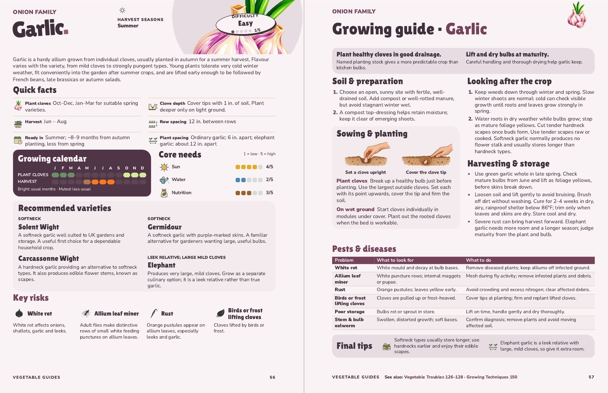

Garlic
Pages 56–57. Quick facts group the planting and harvest timings on the left, with clove depth, row spacing and plant spacing on the right.

For John’s review, 6 November 2026. Changes and checks.
Pages 56–57. Quick facts group the planting and harvest timings on the left, with clove depth, row spacing and plant spacing on the right.

For John’s review, 6 November 2026. Changes and checks.